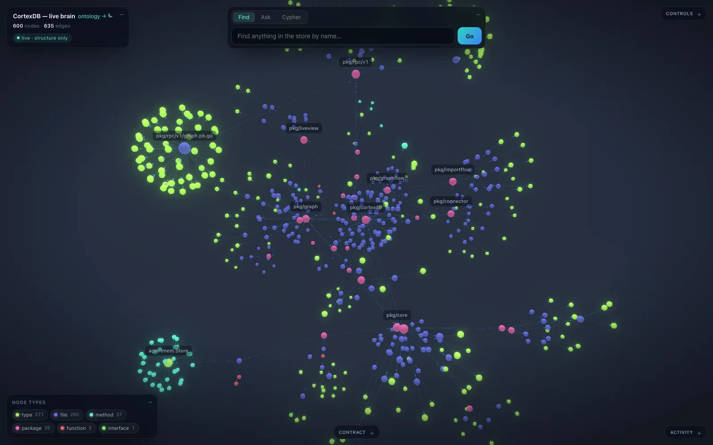
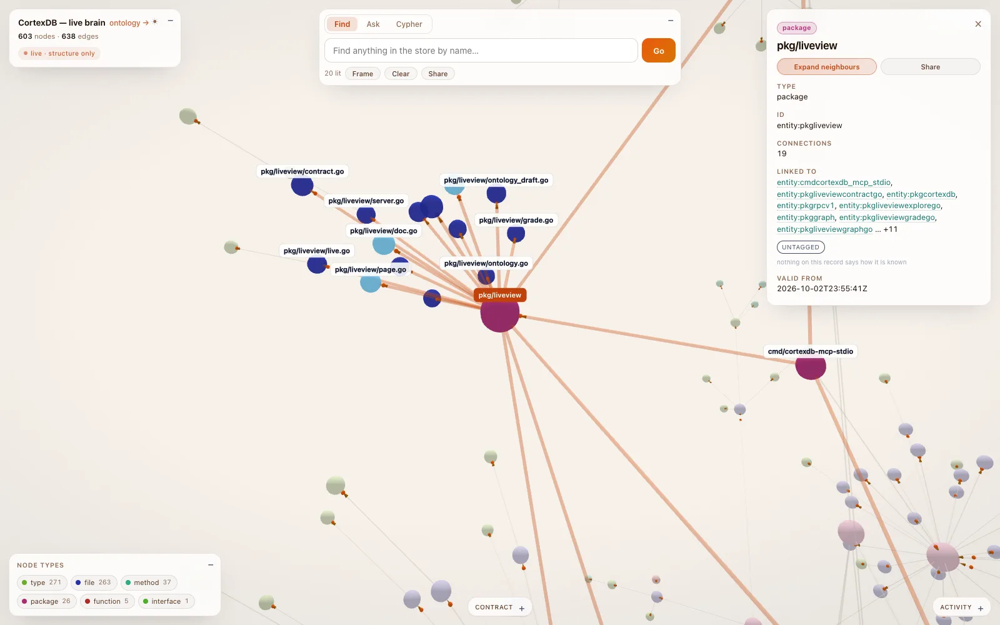
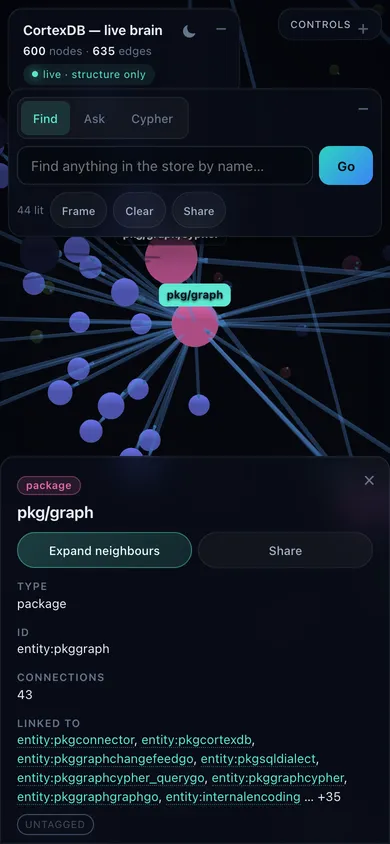

Agent memory
Remember, Recall, Reflect and Consolidate over user, session and global scopes. Recall returns a paste-ready context pack with sources, and relational answers come back as graph facts — Alice —uses→ Apollo — read from edges.
CortexDB is an open-source Go library for agent memory. One file holds vectors, full-text search, RAG documents, scoped memories and an RDF knowledge graph with SPARQL, inference and validation. It runs inside your program, works without an embedding model, and is MIT licensed.
$ go get github.com/liliang-cn/cortexdb/v2

serve_graph_3d on the code graph of CortexDB itself: 600 of its 3,835 symbols drawn, the rest one search or expansion away.Features
No service to deploy and no second database to keep in sync: SQLite by default, PostgreSQL with pgvector when you outgrow one file.
Remember, Recall, Reflect and Consolidate over user, session and global scopes. Recall returns a paste-ready context pack with sources, and relational answers come back as graph facts — Alice —uses→ Apollo — read from edges.
Vector, lexical, hybrid and graph lanes fused by rank, plus Personalized PageRank (HippoRAG 2) for questions whose answer is two hops away. auto picks the walk only when the question names a specific entity.
RDF 1.2 triple terms, SPARQL 1.1 and 1.2, read-only Cypher, RDFS and an OWL 2 RL subset, SHACL validation and SHACL-AF rules. Every inferred triple can explain itself; contradictions are reported, never guessed away.
Every committed write lands in change_log in the same transaction — commit order, exactly once, nothing from a rollback. It keeps inferences current automatically and is what a sync or trigger builds on.
80+ tools with the same names in-process and over MCP. A plugin gives Claude Code and Codex one shared brain with /remember, /recall and an auto-recall hook; a gRPC server shares it across machines.
CortexDB never imports an LLM SDK. Without an embedder it searches lexically — Chinese questions asked as whole sentences included — and still builds the entity graph. Add any OpenAI-compatible embeddings endpoint for vectors.
Typed objects, links and interfaces with primary keys and cardinality, an object-set algebra, action types with an audit trail, and a breaking-change schema diff — Palantir-style, in the same file.
HNSW, IVF and flat indexes, scalar and product quantization, and 1-bit binary codes rescored exactly: recall@10 0.979–0.996 on real 768-d embeddings at 1/32 of the memory.
Records carry their source, chunk, producer and a grade — verified, asserted, refused. An Authorize callback gates every retrieval candidate, so access control holds at the retrieval layer.
Get started
Embed the library, give your coding agent a memory, or run one server many clients share.
Open a file, remember, recall. No embedder needed.
db, _ := cortexdb.Open(cortexdb.DefaultConfig("brain.db"))
defer db.Close()
brain := db.KnowledgeMemory()
brain.Remember(ctx, cortexdb.KnowledgeMemoryRememberRequest{
Content: "Alice prefers tabs.", Scope: "user",
})
rec, _ := brain.Recall(ctx, cortexdb.KnowledgeMemoryRecallRequest{
Query: "what does Alice prefer?",
})
fmt.Println(rec.ContextPack.Text) // with sourcesOne global brain, slash commands and auto-recall. No API key.
# Claude Code
/plugin marketplace add liliang-cn/cortexdb
/plugin install cortexdb@cortexdb
# Codex
codex plugin marketplace add liliang-cn/cortexdb
codex plugin add cortexdb@cortexdb
# then, in any session
/remember Our staging DB is on port 45432
/recall staging databaseRun the gRPC server once; point clients and agents at it.
go install github.com/liliang-cn/cortexdb/v2/cmd/cortexdb-grpc@latest
# typed clients
cargo add cortexdb-client
pip install cortexdb-client
npm install cortexdb-client
# share one brain between machines
export CORTEXDB_REMOTE=host:portBenchmarks
Standard retrieval benchmarks run through the same public API an application calls — SaveKnowledge then SearchKnowledge — with cortexdb-bench. No embedder; auto is the default mode.
| Benchmark | Kind | Lexical | Auto | Auto vs lexical | p95 |
|---|---|---|---|---|---|
| 2WikiMultiHopQA | multi-hop | 0.657 | 0.807 | 21 ms | |
| MuSiQue | multi-hop | 0.457 | 0.542 | 28 ms | |
| LoCoMo | conversation | 0.493 | 0.495 | 8 ms | |
| LongMemEval | conversation | 0.861 | 0.862 | 15 ms |
The multi-hop gain comes from a Personalized PageRank walk over the entity graph SaveKnowledge builds; on single-hop conversation memory auto holds lexical's recall, because an entity most passages mention (a conversation's speaker) is not used to start the walk. Datasets are pinned by sha256; reproduce with go run ./cmd/cortexdb-bench.
See it
CortexDB is inspectable by design. serve_graph_3d serves a live view from inside the MCP server handling the calls, so the graph lights up as agents touch it. Find any node across the whole store, ask a question, run read-only Cypher, and expand node by node. graph_schema reports the schema the data actually has, and every inferred fact can be traced back to the facts it came from.
?focus=, ?ask=, ?cypher=, ?theme=sqlite3

Fit
FAQ
CortexDB is an open-source Go library that stores an AI agent's memory and knowledge in one SQLite file: vectors, full-text search, RAG documents, scoped memories, and an RDF knowledge graph you can query with SPARQL or read-only Cypher. It runs inside your program; there is no server to operate. It is MIT licensed.
No. CortexDB never imports an LLM SDK. Without an embedder it uses lexical retrieval (FTS5, including Chinese and Japanese text) and still builds an entity graph that graph-walking retrieval uses. Plugging in any OpenAI-compatible embeddings endpoint, such as Ollama, adds vector and hybrid search.
A vector database stores embeddings and answers nearest-neighbour queries. CortexDB is an embedded library that also keeps agent memory with scopes, documents for RAG, and a knowledge graph with inference and validation, all in one file next to your code. It is not a distributed vector database and not an enterprise RDF server.
Yes. The cortexdb-grpc server exposes the same brain over gRPC, with typed clients for Rust (cargo add cortexdb-client), Python (pip install cortexdb-client) and Node.js (npm install cortexdb-client). Agents can also use it through its MCP server.
Yes. It ships as a plugin for both. In Claude Code run /plugin marketplace add liliang-cn/cortexdb, then /plugin install cortexdb@cortexdb. The plugin runs in lexical mode with no API key and keeps one global brain at ~/.cortexdb/cortexdb.db; point several machines at one cortexdb-grpc server to share it.
SQLite by default, through the pure-Go modernc.org/sqlite driver, so there is no CGO. A postgres:// connection string moves the same brain to PostgreSQL with pgvector; vectors, hybrid search, memory and the RDF graph behave the same on both.
SPARQL 1.1 (a documented practical subset) with SPARQL 1.2 triple terms, read-only Cypher over the property graph, RDFS and an OWL 2 RL subset kept current automatically as facts change, SHACL validation and SHACL-AF triple rules. The in-scope W3C RDF 1.2 and SPARQL 1.2 test suites pass on SQLite and PostgreSQL.
Measured through the public API with cortexdb-bench, no embedder, recall@5 in the default auto mode against plain lexical search: 2WikiMultiHopQA 0.807 vs 0.657, MuSiQue 0.542 vs 0.457, LoCoMo 0.495 vs 0.493, LongMemEval 0.862 vs 0.861, with p95 latency under 30 ms. The multi-hop gains come from a Personalized PageRank walk over the entity graph.
Open source under MIT. One command to add it to a Go module.